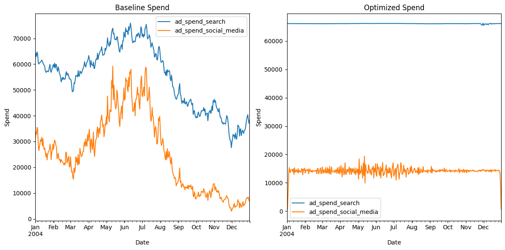
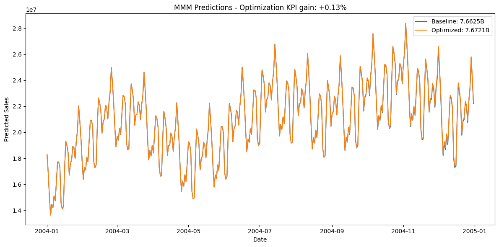
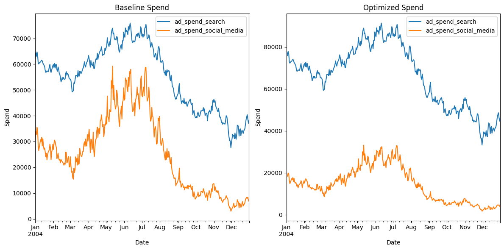
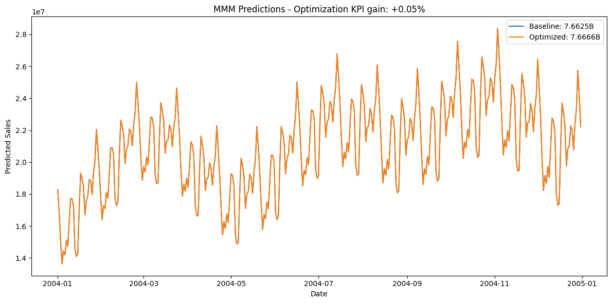
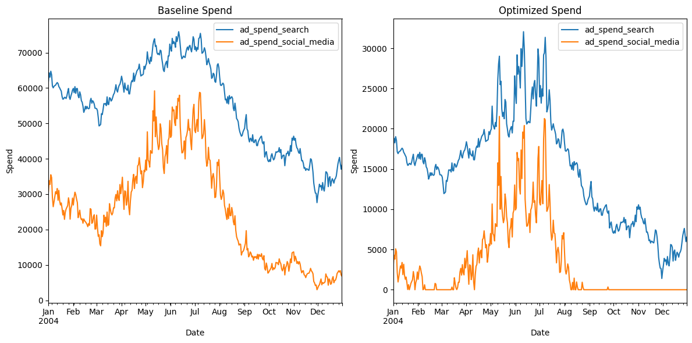
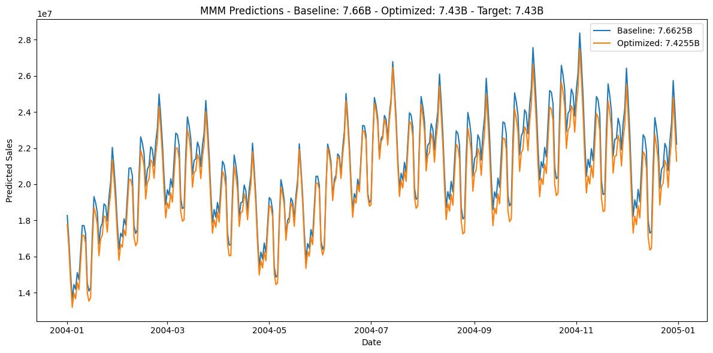
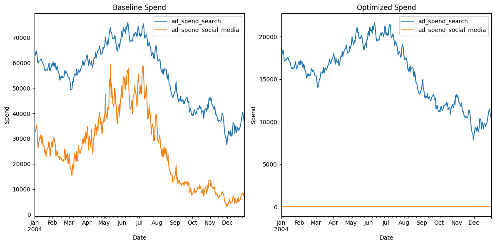
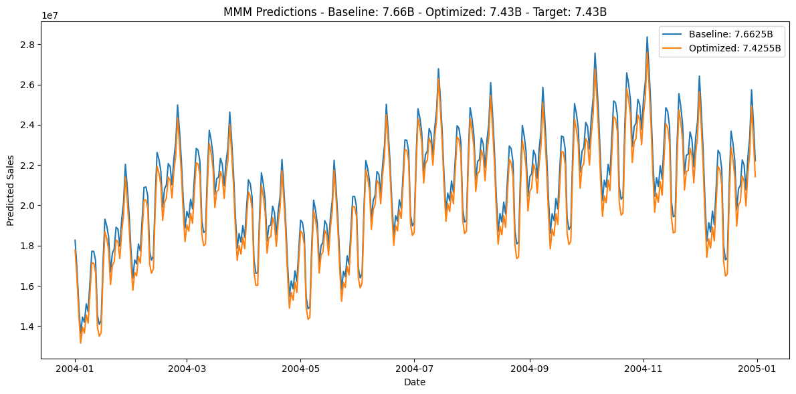

Budget Optimization
In this tutorial, you’ll learn how to use Prophetverse’s budget-optimization module to:
- Allocate daily spend across channels to maximize a key performance indicator (KPI).
- Minimize total spend required to achieve a target KPI.
You’ll also see how to switch between two parametrizations without hassle:
- Daily-spend mode: Optimize the exact dollar amount for each day and channel.
- Share-of-budget mode: Fix your overall spending pattern and optimize only the channel shares.
By the end, you’ll know how to pick the right setup for your campaign goals and make adjustments in seconds.
1. Setting Up the Problem
In this example, we will load the same dataset as in the previous tutorial, and use the complete model, including the calibration with lift tests and attribution models.
Output: [1]
1.1 Load synthetic data
from prophetverse.datasets._mmm.dataset1 import get_dataset
y, X, lift_tests, true_components, model = get_dataset()
Output: [2]
1.2 Utility plotting functions
def plot_spend_comparison(
X_baseline,
X_optimized,
channels,
indexer,
*,
baseline_title="Baseline Spend",
optimized_title="Optimized Spend",
figsize=(12, 6),
):
"""Plot baseline vs. optimized spend for the specified channels."""
fig, ax = plt.subplots(1, 2, figsize=figsize)
X_baseline.loc[indexer, channels].plot(ax=ax[0], title=baseline_title)
X_optimized.loc[indexer, channels].plot(ax=ax[1], title=optimized_title)
for a in ax:
a.set_ylabel("Spend")
a.set_xlabel("Date")
plt.tight_layout()
return fig, ax
def plot_predictions_comparison(
y_baseline,
y_optimized,
*,
target=None,
baseline_label="Baseline",
optimized_label="Optimized",
ylabel="Predicted Sales",
figsize=(12, 6),
):
"""Plot baseline vs. optimized KPI predictions, optionally with a target."""
total_baseline = y_baseline.sum()
total_optimized = y_optimized.sum()
plt.figure(figsize=figsize)
plt.plot(
y_baseline.index.to_timestamp(),
y_baseline,
label=f"{baseline_label}: {total_baseline/1e9:.4f}B",
)
plt.plot(
y_optimized.index.to_timestamp(),
y_optimized,
label=f"{optimized_label}: {total_optimized/1e9:.4f}B",
)
if target is not None:
title = (
f"MMM Predictions - Baseline: {total_baseline/1e9:.2f}B - "
f"Optimized: {total_optimized/1e9:.2f}B - Target: {target/1e9:.2f}B"
)
else:
title = "MMM Predictions"
plt.title(title)
plt.xlabel("Date")
plt.ylabel(ylabel)
plt.legend()
plt.tight_layout()
return plt.gcf()
2. Budget Optimization
Once we have our model to predict the KPI, we can use it to optimize our budget-allocation strategy.
You can use this feature to provide not only a descriptive analysis of the channels’ contributions, but also a prescriptive analysis of the budget allocation.
The budget-optimization module is designed to be flexible and extensible. It is composed of three main components:
- The objective function – what you want to optimize.
- The constraints – e.g. budget caps, channel-share rules, or any custom rule.
- The parametrization transform – optionally, how you want to parameterize the problem.
For example, instead of optimizing the daily spend for each channel, you can optimize the share of budget for each channel while keeping the overall spending pattern fixed.
Maximizing a KPI
The BudgetOptimizer class is the main entry point for the budget-optimization module.
It takes these three components as input and uses them to optimize the budget allocation.
During optimize, you pass the model, the data, the horizon, and which columns to optimize.
Your data X must cover the optimization horizon. The values in X.loc[horizon, columns]
are treated as initial guesses.
from prophetverse.experimental.budget_optimization import (
BudgetOptimizer,
SharedBudgetConstraint,
MaximizeKPI,
)
budget_optimizer = BudgetOptimizer(
objective=MaximizeKPI(),
constraints=[SharedBudgetConstraint()],
)
budget_optimizer
Output: [4]
BudgetOptimizer(constraints=[SharedBudgetConstraint()], objective=MaximizeKPI())Please rerun this cell to show the HTML repr or trust the notebook.
BudgetOptimizer(constraints=[SharedBudgetConstraint()], objective=MaximizeKPI())
MaximizeKPI()
This is our optimization horizon:
Output: [5]
PeriodIndex(['2004-01-01', '2004-01-02', '2004-01-03', '2004-01-04',
'2004-01-05', '2004-01-06', '2004-01-07', '2004-01-08',
'2004-01-09', '2004-01-10',
...
'2004-12-22', '2004-12-23', '2004-12-24', '2004-12-25',
'2004-12-26', '2004-12-27', '2004-12-28', '2004-12-29',
'2004-12-30', '2004-12-31'],
dtype='period[D]', length=366)
By default, BudgetOptimizer will optimize the daily spend for each channel.
Let's see it in action.
X_opt = budget_optimizer.optimize(
model=model,
X=X,
horizon=horizon,
columns=["ad_spend_search", "ad_spend_social_media"],
)
Output: [6]
Baseline vs. optimized spend
Output: [7]
(<Figure size 1200x600 with 2 Axes>,
array([<Axes: title={'center': 'Baseline Spend'}, xlabel='Date', ylabel='Spend'>,
<Axes: title={'center': 'Optimized Spend'}, xlabel='Date', ylabel='Spend'>],
dtype=object))

# #### Predictions comparison
y_pred_baseline = model.predict(X=X, fh=horizon)
y_pred_opt = model.predict(X=X_opt, fh=horizon)
plot_predictions_comparison(y_pred_baseline, y_pred_opt)
plt.title(
f"MMM Predictions - Optimization KPI gain: "
f"+{y_pred_opt.sum()/y_pred_baseline.sum()-1:.2%}"
)
plt.show()
Output: [8]

Optimizing channel share
Instead of optimizing daily spend, we can optimize the share of budget for each channel. This is useful when you want to keep the spending pattern fixed (e.g. seasonal bursts) and usually converges faster because fewer parameters are free.
from prophetverse.experimental.budget_optimization import InvestmentPerChannelTransform
budget_optimizer = BudgetOptimizer(
objective=MaximizeKPI(),
constraints=[SharedBudgetConstraint()],
parametrization_transform=InvestmentPerChannelTransform(),
options={"disp": True},
)
X_opt = budget_optimizer.optimize(
model=model,
X=X,
horizon=horizon,
columns=["ad_spend_search", "ad_spend_social_media"],
)
Output: [9]
Baseline vs. optimized spend
Output: [10]
(<Figure size 1200x600 with 2 Axes>,
array([<Axes: title={'center': 'Baseline Spend'}, xlabel='Date', ylabel='Spend'>,
<Axes: title={'center': 'Optimized Spend'}, xlabel='Date', ylabel='Spend'>],
dtype=object))

Predictions comparison
y_pred_baseline = model.predict(X=X, fh=horizon)
y_pred_opt = model.predict(X=X_opt, fh=horizon)
plot_predictions_comparison(y_pred_baseline, y_pred_opt)
plt.title(
f"MMM Predictions - Optimization KPI gain: "
f"+{y_pred_opt.sum()/y_pred_baseline.sum()-1:.2%}"
)
plt.show()
Output: [11]

Minimizing budget to reach a target
How much should we invest to reach a 30 % increase in 2004?
from prophetverse.experimental.budget_optimization import (
MinimizeBudget,
MinimumTargetResponse,
)
target = y.loc["2003"].sum() * 1.30
budget_optimizer = BudgetOptimizer(
objective=MinimizeBudget(),
constraints=[MinimumTargetResponse(target_response=target, constraint_type="eq")],
options={"disp": True},
)
# Guess initial values inside a feasible region
X0 = X.copy()
X_opt = budget_optimizer.optimize(
model=model,
X=X0,
horizon=horizon,
columns=["ad_spend_search", "ad_spend_social_media"],
)
Output: [12]
Budget comparison
Output: [13]
(<Figure size 1200x600 with 2 Axes>,
array([<Axes: title={'center': 'Baseline Spend'}, xlabel='Date', ylabel='Spend'>,
<Axes: title={'center': 'Optimized Spend'}, xlabel='Date', ylabel='Spend'>],
dtype=object))

Predictions comparison
y_pred_baseline = model.predict(X=X0, fh=horizon)
y_pred_opt = model.predict(X=X_opt, fh=horizon)
plot_predictions_comparison(
y_pred_baseline,
y_pred_opt,
target=target,
)
plt.show()
Output: [14]

Re-parametrization: optimizing channel share
Here we minimize budget again but let the optimizer search only for each channel’s share of the total investment instead of day-by-day dollar amounts.
budget_optimizer = BudgetOptimizer(
objective=MinimizeBudget(),
constraints=[MinimumTargetResponse(target_response=target, constraint_type="eq")],
parametrization_transform=InvestmentPerChannelTransform(),
bounds={"ad_spend_search": (0, 2e9), "ad_spend_social_media": (0, 2e9)},
options={"disp": True},
)
X_opt = budget_optimizer.optimize(
model=model,
X=X0,
horizon=horizon,
columns=["ad_spend_search", "ad_spend_social_media"],
)
Output: [15]
Budget comparison
Output: [16]
(<Figure size 1200x600 with 2 Axes>,
array([<Axes: title={'center': 'Baseline Spend'}, xlabel='Date', ylabel='Spend'>,
<Axes: title={'center': 'Optimized Spend'}, xlabel='Date', ylabel='Spend'>],
dtype=object))

Predictions comparison
y_pred_baseline = model.predict(X=X0, fh=horizon)
y_pred_opt = model.predict(X=X_opt, fh=horizon)
plot_predictions_comparison(
y_pred_baseline,
y_pred_opt,
target=target,
)
plt.show()
Output: [17]

Conclusion
We have seen some of the capabilities of the budget-optimization module. There are three key components, besides the optimizer itself:
- The objective function
- The constraints
- The parametrization transform
You can also create your own objective functions and constraints, and use them in the optimizer. Budget optimization lets you and your team bring the company closer to data-driven decisions.